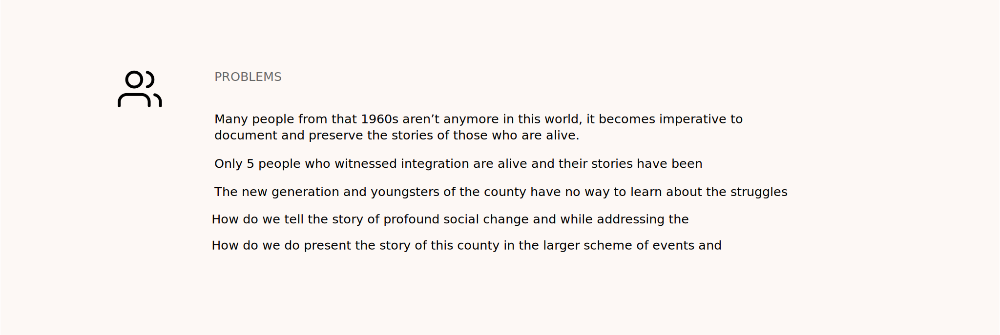

Douglas, Georgia Integration Years
Designed an archive for the audio-visual history of integration years for Douglas, Georgia.
UXD & Visual Design Jan'19 - May'19 My Role — Experience Designer

Overview
Design Brief
My client was a historian and a storyteller who had interviewed people of a small county in Georgia. Apart from audio interviews, the client had created a huge archive in the form of newspapers and photographs. The client wanted to make these stories accessible to the public and preserve the history of integration years.
How can we help people preserve the memories of school integration years and educate young people about their history in an intimate fashion while doing justice to the stories of people who lived through that era?
Quick Sneak Peek into the Final Deliverable
I designed a web based digital archive/ exhibit that allowed people to explore stories of the people and places which were central to the integration years in Douglas, Georgia.
People of the County Who Witnessed Integration Years
A Timeline Picturing the County in the Historical Timeline of Racial Injustice and Civil Rights Movement
Stories by the People of the County Who Lived Through That Era
Story of this Project
4 Months, Weekly Client Briefings, Content Structuring, Design Criqtiues & Sign-off

Challenge 1
It's a sensitive topic. I needed to truly educate myself and embed into the historical context!
Educated myself on the topic - books, blogs, documentaries helped!
Being an outsider, the biggest concern was to be in the right frame of mind, learn as much as possible, and be able to do justice to the storytelling. Especially when we are telling someone else’s story, even though our role is limited to creating the experience and not the content, as a designer we do get to decide how that story will be told. In this regard, apart from historical study about Lester Maddox, Integration Years, Civil Rights Movement etc, I also studied Dr. Nassim Parvin's essay on Doing Justice to Digital Storytelling.
Workshop with the client to understand the goals, context and expectations!
First meeting with the client helped us understand the design brief and flesh out the goals.
Learning from Existing Historical Projects in Digital Domain
It was extremely hard to find anything similar on the web, but I tried to critique and analyse a few historical projects to understand the do's and dont's.

Ideation & Design
Understanding the Content, Stories and People
I started with understanding the archive first. It was massive and unstructured. So I decided first to structure it and understand the various materials. The vast amount of archive, different types of materials, documents lacking structure was a big challenge. I asked the client to create a timeline in an excel sheet, with both stories and historical events together. I was able to identify 12 topics total, which included 6 people and 6 places.

Challenge 2
How do we do justice to storytelling? We not only have users/audience who will be acessing this artefact but also people whose stories is being told on this platform?
Structuring the Content and Drawing the Information Architecture
Once I had the timeline of all the events, topics to pivot the archive around, I was able to create information architecture for the site. My focus was to center the archive around people and the places in the county, around which the integration revolved.
I started fleshing out the design on paper.

Mid-fidelity Prototype and Client Briefings
We had weekly meetings with the client, and she being a storyteller, I wanted to keep her in loop with every design decision and where we were headed. To begin, with I had two variations of the design which we critiqued and made iterations to. Mid-fidelity prototype with colors and some visual design was necessary for every meeting, in order to guage the vision of the client. I avoided any mockup image and placeholder to avoid any miscommunication and help them imagine how their content/collected materials will look like. Although, they had a big archive, they didn't know what they wanted.


Challenge 3
While I was working on mid-fidelity prototype, a lot of new content came up such as external links, newspapers, videos etc. Given the time and deadline, it was difficult to accomodate them in the current structure or thoughtfully craft their experience separately.
Feedback and Design Critique
While discussing various topics with the client, I found that the topics were nothing but places in the county. And in the context of the county itself, the term "topic" seemed diminutive. Hence we decided to rename "topics" to "places". This also gave a better sense of history for the county- "People", "Places" and "Historical Timeline". The term Gallery also seemed devoid of emotion and turned history into an object, hence, it was chanegd to "In Pictures". To arrive at these design decisions, I conducted a critique session with 3 Digital Media Scholars and Researchers. The mid-fidelity variations were used to brainstorm ideas and also sturcture the content and the stories.


Visual Design
I used a 12 column grid layout for the design. I chose a pallet that was subtle and didn't interfere with the content. The off-white background was chosen to give a historical, old feeling, yet keeping it new and fresh.
Final Design
Dean Showcase with the Client
The Project was showcased at Deanshowcase and appreciated by President Emeritus of the Georgia Institute of Technology (Georgia Tech), Dr. Wayne Clough.

Learnings
Thinking about interface design, the current design gives a lot of visual space for the audience to wander away and not be fully immersed. By visual space, I mean the empty white space that we have right now which leans more towards an archive rather storytelling. Although it was for the first roll out, rethinking through it, a good starting point would be to begin from the emotions we want to evoke, for digital storytelling.
As all of this comes with a risk of trying to re-inventing the wheel, to avoid late realisations, I learned that it is very important to have a framework grounded in the theoretical understanding of digital humanities and storytelling. Maybe we need more art than the design or think of ourselves, not as designers but artists whose canvas is an electronic screen and a keyboard, maybe we need to change our vocabulary to enable us to think beyond human-computer-interaction, where the medium doesn't become bigger than the message. More than anything, these are the thoughts that need to be carefully evaluated and understood before we jump into making and doing.